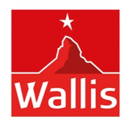
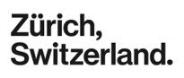

Willkommen auf unserer Webseite
Was kann ich hier machen?
Die Schweiz ist auf Grund der Natur, der kulturellen Vielfalt und der Herzlichkeit ein Touristenmagnet. Die touristischen Angebote in der Schweiz umfassen oft mehrere Kantone. Mit dieser Webseite möchten wir die statistischen Kennzahlen zu den Übernachtungen in der Schweiz zwischen 2005 bis heute veranschaulichen. Logiernächte in der Hotellerie können nach den unterschiedlichenen Jahren sowie der Gästeherkunft gefiltert werden.
Der Schweizer Tourismus wird von folgenden 13 Regionen getragen:
 Wer steckt dahinter?
Vier Studenten der Fachhochschule Graubünden haben im Rahmen des Moduls "Webprogrammierung" den Auftrag erhalten mit den gelernten Techniken aus dem Unterricht eine interaktive Anwendung zu entwickeln. Bei dieser Webseite haben die Studenten Alexa Bocz, Igor Mazenauer, Kevin Caluori und Jetlira Mazreku mitgewirkt. Das Team hofft, dass du nun einen spannenden Einblick in einen Teil der Tourismuswelt der Schweiz erhalten konntest.
Danke dir für deinen Besuch!